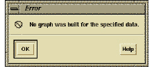

Function Path Mapping
Once you have determined your source, targets, and output, click Create to examine your function query, starting the path-mapping process.
DIScover looks at the source and target functions to see if there are paths between them. If DIScover finds that there is at least one valid path between a specified source and target function set, DIScover:
• discards those functions that do not lie on a path between any source and target function (removes them from the Graph dialog box and excludes them from the resulting output)
• identifies all functions that lie on a path between any source and target function, removes them from the Graph dialog box, and generates text (ASCII) or visual (Viewer) output identifying all existing paths, including the source (root) and target (endpoint) functions
The functions that remain in the Source and Target columns of the Graph dialog box are the logical roots and endpoints of that path (unless DIScover does not find a path for your function query, in which case no functions remain in the Graph dialog box).
If there is no path for your function query, DIScover presents an error message via the message logger dialog box.
